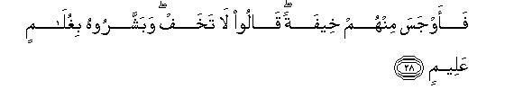
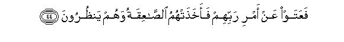
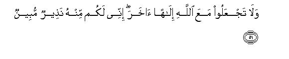
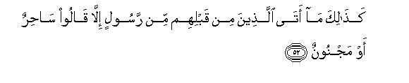
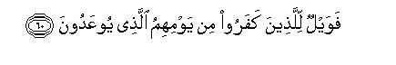

بسم الله الرحمن الرحيم
Sayyid Abul Ala Maududi - Tafhim al-Qur'an - The Meaning of the Qur'an
 51.
Surah Adh Dhariyat (The Winds)
51.
Surah Adh Dhariyat (The Winds)
It is derived from the very first word wadh-dhariyat, which implies that it is a Surah which begins with the word adh-dhariyat.
The subject matter and the style clearly show that it was sent down in the period when although the Holy Prophet's invitation was being resisted and opposed with denial and ridicule and false accusations stubbornly, persecution had not yet started. Therefore, this Surah also seems to have been revealed in the same period in which the Surah Qaf was revealed.
The Surah mostly deals with the Hereafter, and in the end it presents the invitation to Tauhid. In addition, the people have also been warned that refusal to accept the message of the Prophets and persistence in the concepts and creeds of ignorance have proved to be disastrous for those nations themselves which have adopted this attitude and way of life in the past.
About the Hereafter what this Surah presents in short but pithy sentences is this: The people's different and conflicting beliefs about the end of human life are themselves an express proof that none of these beliefs and creeds is based on knowledge; everyone by himself has formed an ideology on the basis of conjecture and made the same his creed. Someone thought that there would be no life-after-death; someone believed in the life- after-death, but in the form of the transmigration of souls someone believed in the life hereafter and the meting out of the rewards and punishments but invented different sorts of props and supports to escape retribution. About a question of such vital and fundamental importance a wrong view of which renders man's whole life-work wrong and waste and ruins his future for ever, it would be a disastrous folly to build an ideology only on the basis of speculation and conjecture, without knowledge. It would mean that man should remain involved in a grave misunderstanding, pass his whole life in the heedlessness of error, and after death should suddenly meet with a situation for which he had made no preparation at all. There is only one way of forming the right opinion about such a question, and it is this: Man should seriously ponder over the knowledge about the Hereafter that the Prophet of Allah is conveying to him from Him, and should study carefully the system of the earth and heavens and his own existence: and should see whether the evidence of that knowledge's being sound and correct is afforded by everything around him or not. In this regard, the arrangement of the wind and rain, the structure of the earth and the creatures found on it, man's own self, the creation of the heavens and of everything in the world in the form of pairs have been presented as evidence of the Hereafter, and instances have been cited from human history to show that the temper of the empire of the Universe requires that the law of retribution must operate here.
After this, giving the invitation to Tauhid briefly, it has been said : "Your Creator has not created you for the service of others but for His own service. He is not like your false gods, which receive sustenance from you and godhead of which cannot function without your help, but He is a God Who is the Sustainer of all, Who does not stand in need of sustenance from anyone and Whose Godhead is functioning by His own power and might.
In this very connection, it has also been stated that whenever the Prophets of Allah have been opposed and resisted, they have not been opposed and resisted on the basis of any rational ground but on the basis of the same obduracy and stubbornness and false pride that is being shown against the Prophet Muhammad (peace and blessings of Allah be upon him), and there is no other motive for it than rebellion and arrogance. Then the Holy Prophet has been instructed not to bother about the rebels but to go on performing his mission of invitation and admonition, for it is useful and beneficial for the believers although it may not be so for the other people. As for the wicked people who still persist in their rebellion, they should know that their predecessors who followed the same way of life, have already received their shares of the punishment, and these people's share of the punishment has been made ready for them.

In the name of Allah, the Compassionate, the Merciful.

[1-6] By the winds that raise up dust, then lift up clouds laden with water.1 then glide with ease, then distribute a big affair (rain).2 The truth is that that with which you are being threatened3 is true, and the meting out of the rewards and punishments is inevitable.4

[7-9] By the sky of various appearances,5 you are at variance with one another (concerning the Hereafter).6 Only such a one is perverted from it who has turned away from the Truth.7

[10-19] Doomed are they who judge by conjecture,8 who are deeply engrossed in ignorance and heedlessness.9 They ask, "When will be the Day of Retribution?" It will be when they are punished at the Fire.10 (It will , be said to them: ) "Now taste your mischief.11 This is the same which you were seeking to be hastened.12 The righteous,13 however, shall be among gardens and water springs that Day, and shall be joyfully receiving what their Lord shall give them.14 They were doers of good even before the coming of this Day: they slept but little in the night,15 prayed for forgiveness in the early hours of dawn,16 and in their possessions was a due share of him who asked and of him who was needy.17
[20-23] There are many signs in the earth for those who affirm faiths18 and also in your own selves.19 Do you not perceive? In the heaven is your provision and also that which is being promised to you.20 So, by the Lord of the heaven and the earth! It is true, as true as you are speaking now.

[24-37] O Prophet,21 has the story of Abraham's honored guests reached you?22 When they came to him, they said, "Peace to you." He said, "Peace to you too, unfamiliar folks they are!"23 Then he went quietly to his family24 and brought out a fatted (roasted) calf25 and laid it before the guests. He said, "Will you not eat?" Then he became afraid of them.26 They said, "Be not afraid!" And they gave him the good news of the birth of a son, possessing knowledge.27 Hearing this his wife came forward, crying, and she smote her face, and said, "An old woman, barren!"28 "Thus has said your Lord," they replied, "He is the All-Wise, the All-Knowing.”29 Abraham said," O Divine Messengers, what is your special errand?”30 They said, "We have been sent to a guilty people,31 to rain upon them stones of baked clay, which are marked with your Lord for the transgressors."32 Then33 We evacuated all those who were believers in that settlement, and We did not find in it any house of the Muslims except one.34 Then We left there only one sign for those who fear the painful torment.35
[38-40] (And there is a sign for you) in the story of Moses. When We sent him to Pharaoh with a clear authority,36 he showed arrogance on account of his might, and said, "He is a sorcerer or a madman."37 Consequently, We seized him and his hosts and cast them into the sea, aid he became blameworthy.38
[41-42] And (for you is a sign) in `Ad when We sent upon them a blighting wind which made rotten everything that it blew on.39

[43-45] And (for you is a sign) in Thamud when it was said to them, "Enjoy yourselves for a while."40 But in spite of this warning they defied the Command of their Lord. Consequently, they were overtaken by a thunderbolt41 even while they looked on. Then they could neither stand up nor were able to save themselves.42
[46] And before them We destroyed the people of Noah because they were a sinful people.



[47-51] We43 have built the heaven with Our own might and We possess the power for it.44 We have spread out the earth and (behold) how excellent Spreaders We are!45 And We have created everything in pairs46 maybe that you learn a lesson from it47 So flee unto Allah: I am an open warner from Him to you. And do not set up another god with God; I am on open warner from Him to you.48


[52-55] This has always been so. Whenever a Messenger came to the peoples before them, they said, "He is a sorcerer or a madman."49 Have they reached a mutual understanding concerning this? Nay, but they are all a rebellious people.50 So, O Prophet, turn away from them: you are not at all to blame.51 But go on admonishing them, for the admonition is beneficial for the believers.52

[56-60] I have not created the jinn and the men except for this that they should worship Me.53 I do not ask any sustenance of them, nor do I ask them to feed Me.54 Allah Himself is the Sustainer, Possessor of power and might.55 Therefore, those who have done wrong,56 have also their portion of a similar torment ready as the people like them have been meted out their portions before. So let them not ask Me to hasten.57 Ultimately, there will be destruction for those who have disbelieved, on the Day with which they are being threatened.
1All the commentators are agreed that adh-dhariyat implies the winds that disperse and mist up the dust, and al-hamilat-i wiqran implies the winds that lift up millions of tons of water vapors from the oceans in the form of clouds. This same commentary has been reported from Hadrat `Umar, Hadrat `Ali, Hadrat 'Abdullah bin `Abbas, Hadrat `Abdullah bin `Umar, and also from Mujahid, Said bin Jubair, Hasan Basri, Qatadah, Suddi and other scholars.
2The commentators have disputed the commentary of al-Jariyat-i yusran and al-muqassimat-i amran. One group has preferred the view, or held this meaning as admissible, that by these two also are meant the winds; that is, the same very winds then transport the clouds, and spreading over different parts of the earth, distribute the water as and where required according to Allah's command, The other group holds that al-ariyat-i yusran implies fast moving boats, and al-muqassimat-i amran implies the angels who distribute among the creatures their shares of the provisions according to Allah's command. According to a tradition, Hadrat `Umar explained this very meaning of these two sentences and said: "Had I not heard this from the Holy Prophet, I would not have mentioned it." On this very basis, `Allama Alusi has expressed the opinion that it is not permissible to take any other meaning of these sentences than this, and those who have taken any other meaning, have taken undue liberties. But Hafiz Ibn Kathir says that this tradition has weak links of the transmitters and on its basis it cannot be said with absolute certainty that the Holy Prophet might himself have given this commentary of these sentences. There is no doubt that from a good number of the Companions and their immediate followers only this second commentary has been reported, but a good number of the commentators have given the first commentary also, and it fits in better with the context. Shah Rafi`uddin, Shah 'Abdul Qadir and Maulana Mahmud-ul-Hasan also have preferred the first meaning in their translations of the Qur'an.
3The word used in the original is to 'edun. If it is derived from we'd, the meaning would be: "That which you are being promised;" and if it is from wa'id, it would mean: "That which you are being threatened with." As regards the context, the second meaning is preferable, for the addressees are the people who were lost in disbelief, polytheism and sin, and were not prepared to believe that they would be held accountable some time in the future and would be rewarded or punished accordingly. That is why, we have taken to 'adun in the meaning of wa' id and not of wa'd (promise).
4This is the thing for which the oath has been sworn. The oath implies this: The unique order and regularity with which the wonderful system of the rain is functioning before your eyes, and the wisdom and good reasons which clearly underlie it, testify to the reality that this world is not a meaningless and useless toy-house where the great drama of life is being presented at random since millions and millions of years. Hut, it is, in fact, a wise system of the highest order in which everything that happens has a purpose and reason behind it. In this system it is not possible that n creature like man should have been given intellect, sense and the powers to exploit things to advantage, should have been granted moral sense to distinguish the good and evil, right and wrong deeds and then might have ban left alone foolishly and meaninglessly in the world to behave as he pleased, and that he should never be questioned as to how he had used and employed the powers of the heart and mind and body, the vast means placed at his disposal w work in the world, and the power and authority granted to him to employ the countless creatures of God to advantage. In this system of the Universe where everything is purposeful, how can the creation of a unique being like man only be purposeless? In a system where everything is based on wisdom, how can the creation of man only be useless and futile? The purpose of the creation of those things which do not possess consciousness and intellect is fulfilled in this very physical world. Therefore, it would be right and reasonable if they were destroyed after they had reached the end of their life term, for they have not been granted any powers and authority for which they might have to be called to account. But a creature which possesses intellect and consciousness and authority, whose activities are not confined only to the physical world, but are also moral in nature, and whose actions entailing moral consequences do not take place only till the end of life, but continue to register their moral effects on it even after death, cannot be destroyed like plants and animals just after it has fulfilled the function of its physical existence. Whatever good or evil act he has committed by his own will and choice, he must get the reward 'or suffer the punishment for it justly and equitably, for this is the basic requirement of the factor under which, contrary to other creatures, he has been endowed with the freedom of choice and will. If he is not held accountable, if he is not rewarded or punished according to his moral acts, and if he also is destroyed at the conclusion of his physical life like the creatures which have been given no freedom of will and choice, his creation would inevitably be altogether futile, and a Wise Being cannot be expected to indulge in a futile exercise.
Besides, there is also another reason for swearing an oath by these four phenomena of the Universe regarding the occurrence of the Hereafter and the meting out of rewards and punishments. The ground on which the deniers of the Hereafter regard the life after death as impossible is this: When we are mixed up with dust after death and our particles have scattered away in the earth, how can it be possible that all these scattered particles of the body are reassembled and we are made to rise up again? The error of this apprehension is by itself removed when we consider deeply the four phenomena of the Universe, which have been presented as an argument for the Hereafter. The rays of the sun have their effect on all the collections of water on the surface of the earth, where their heat reaches. In this process countless drops of water evaporate from the collection, but they do not become extinct, and every drop remains preserved in the air as vapors. When Allah commands the same wind gathers the same vapors of the drops together, combines them into thick clouds, spreads those clouds on different parts of the earth and precisely at the time appointed by Allah causes each single drop to fall back to the earth in the form as it was in the beginning. This phenomenon that is occurring before the eyes of man daily testifies that the particles of the bodies of the dead men can also gather together at one command by Allah and the men can be raised up in the shape in which they lived before. Whether these particles are in the dust, or in the water, or in the air, in any case they remain preserved in this very earth and its atmosphere. Why should it be difficult for the God Who gathers together the vapors of water after they had dispersed in the air, by means of the same air, and then causes them to rain as water, to gather together the scattered particles of the human bodies from the air, water and earth and then combine them in their original form and shape?
5The word hubuk in the original is also used for the paths and for the waves which are produced on the sand of the desert and the surface of stagnant water by the wind; it is also spoken for the curls in wavy hair. Here, the sky has been characterized by "hubuk" either because the sky is often overcast with clouds of different shapes, which go on changing because of the wind, and no shape lasts nor resembles any other, or because at night one sees the stars scattered in the sky in many different combinations and no combination resembles any other combination.
6The oath has been sworn by the sky of various appearances on this difference of views because of the similarity. That is, just as the clouds and the clusters of stars in the sky have different appearances and there is uniformity among them, so are also your views about the Hereafter, each different from the other. Some one says that this world is eternal and no Resurrection can take place. Another say s that this system is not eternal and can come to an end in the course of time, but whatever becomes extinct, including man, cannot possibly be resurrected. Another one regards resurrection as possible but, holds the belief that man in order to be requited for his good and evil deeds is born and reborn again and again in this very world. Some one believes in Hell and Heaven but combines the transmigration of the souls also with it. He thinks that the sinner goes to Hell to suffer the punishment as well as is born and reborn in this world for the sake of the punishment. Some one says that the life in the world is in itself an agony; as long as man's self remains attached to physical life, he goes on dying and taking birth again and again in this very world, and his real salvation is that he should attain annihilation. Some one believes in the Hereafter and Hell and Heaven, but says that God by giving death to His only son on the cross had atoned for the original sin of man, and man will escape the evil consequences of his evil acts by believing in the son. Some other people generally believe in the Hereafter and the meting out of the rewards and punishments but at the same time regard certain holy men as the intercessors, who are such favorites of Allah, or wield such influence with Him, that any one who attaches himself to them as a disciple, can escape the punishment whatever he may do in the world. About these holy men also there is no agreement among their devotees; every group of them has its own separate intercessor. This difference of the views itself is a proof that whenever man has formed an opinion about his own and the world's end, independent of Revelation and Prophet hood, he has formed it without knowledge; otherwise if man in this regard really had some direct means of knowledge there would not have arisen so many different and contradictory beliefs.
7The pronoun of anhu in this sentence either turns to the meting out of the rewards and punishments, or to various views. In the first case, it means: "The meting out of the rewards has to take place, in spite of your holding different beliefs about it; but only such a person is perverted from it, who has turned away from the Truth." In the second case, the meaning is: “Only such a one is misled by these different views, who has turned away from the Truth."
8Here the Qur'an is warning man of an important truth. To judge or make an estimate on the basis of conjecture and speculation in the ordinary matters of worldly life may be useful to some extent, although it would be no substitute for knowledge, but it would be disastrous to make estimates and give judgments merely according to one's own conjectures and speculations in a question of such fundamental nature and importance as whether we are, or are not, responsible and accountable to anyone for the deeds and actions of our lifetime, and if we arc, to whom we are accountable, when and what shall be the accountability, and what will be the consequences of our success and failure in that accountability. This is not a question on which man may form an estimate merely according to his conjecture and speculation and then stake his entire life capital on the gamble. For if the conjecture proves to be wrong, it would mean that the man has doomed himself to utter ruin. Furthermore, this question is not at all included among those questions about which one may form a right opinion by the exercise of analogy and conjecture, For conjecture and analogy can work only in those matters which are perceptible for man, whereas this is a question which does not come under perception in any way, Therefore, it is not at all possible that a conjectural and analogical judgment about it may be right and correct. As for the question: What is the right way for man to form an opinion about the matters which are no perceptible and incomprehensible in nature? this has been answered at many places in the Qur'an, and from this Surah also the same answer becomes obvious, and it is this:
(1) Man himself cannot reach the reality directly;
(2) Allah gives the knowledge of the reality through His Prophets; and
(3) man can ascertain the truth of that knowledge in this way: he should study deeply the countless signs that are found in the earth and heavens and in his own self, then consider seriously and impartially whether those signs testify to the reality that the Prophet bas presented, or to the different ideologies that the other people have presented in this regard.
This is the only method of scientific investigation about God and the Hereafter that has been taught in the Qur'an. Doomed would be the one who discarded this method and followed his own analogies and conjectures.
9That is, "They do not know what fate they are heading for on account of their wrong conjectures, whereas every way that is adopted with a wrong view of the Hereafter only leads to ruin. He who is a denier of the Hereafter is not at all preparing himself for any accountability and is engrossed in the thought that there would be no life after death, whereas the time would suddenly come when against all this expectations he would open his eyes in the new life and he would realize that there he has to render an account of each of his acts and deeds. The person who is expending his life under the idea that he would come back to this very world after death, will come to know as soon as he dies that all doors of return are closed, that there is no chance of compensating for the misdeeds of the previous life by any new actions, and that there is another life ahead in which he has to meet with and suffer the consequences of his worldly life for ever after. The person who commits suicide in the hope that after he has destroyed his self and its desires he would escape the agony of life in the form of total annihilation, will find as soon as he passes through the gate of death that there is an everlasting life ahead and not mortality, where he has to explain as to why he had been straining every nerve to destroy the self that he had been blessed with instead of developing and adorning it in every possible way. Likewise, the one who continued committing disobedience of Allah throughout life, placing, reliance upon some son of Allah's becoming an atonement or some holy one's becoming an intercessor, will come to know as soon as he appears before Allah that there is neither any atoner there nor anyone wielding such influence and power that he may save him from Allah's grasp and punishment by means of his own power and influence. Thus, all these conjectural creeds are, in fact, an opiate under the intoxication of which these people are Lying senseless, and do not know where they are being misled by the ignorance which they have adopted by rejecting the true knowledge given by God and His Prophets.
10The disbelievers did not ask the question: When will Resurrection be? for the sake of seeking knowledge but for the purpose of taunt and ridicule. That is why they have been given such an answer. It is just like the taunting reaction of the wicked person who is admonished to desist from his immoral deeds, otherwise he would meet with the evil consequences of those deeds one day, and he asks in jest: When will that day be? Obviously, such a question is not asked to know the date of the occurrence of the evil end but to make fun of the admonition. Therefore, its right answer is that it will occur when the evildoers will meet with their doom. Besides, one should also understand well that if a denier of the Hereafter is discussing the question of the Hereafter sensibly, he can dispute the arguments in favor and against it, but he can never ask the question: On what date will the Hereafter occur? unless he has lost all reason. Whenever he puts such a question, it will only be as a taunt and ridicule. For it does not at all affect the real discussion whether the date of the occurrence of the Hereafter is stated or not. No one can deny the Hereafter only because the year and the month and the day of its occurrence have not been given, nor can one believe in it on hearing that it will occur on such and such a day of such and such a month and year. The date is no argument that may cause a denier to be convinced of its coming, for after that the question will arise: How can One believe whether on that particular day the Hereafter will actually occur?
11The word fitnah gives two meanings here:
(1) “Taste this torment of yours ; " and
(2)-"taste the mischief that you had created and spread in the world. "
12The disbelieves' asking: "When will the Day of Retribution be?" implied: "Why is it being delayed ?" That is, "When we have denied it and have deserved the punishment for belying it, why doesn't it overtake us immediately ?" That is why when they will be burning in the Hell-fire, at that time it will be said to them: "This is that which you sought to be hastened. " This sentence by itself gives the meaning: It was Allah's kindness that He did not seize you immediately on the occurrence of disobedience from you and went on giving you respite after respite to think and understand and mend your ways. But the foolish people that you were, you did not take advantage of the respite but demanded that your doom should be hastened for you instead. Now you may see for yourself what it was that you were seeking to be hastened?"
13In this context the word muttaqi (the righteous) clearly implies those people who believed in the Hereafter when they were given the news of it by the Book of Allah and His Messenger, and adopted the attitude and way of life that they were taught for success in the life hereafter, and refrained from the way about which they had been told that it would involve man in the torment of God.
14Literally: ".. shall be receiving what their Lord will have granted them", but in this context "receiving" does not merely mean "to receive" but to receive joyfully. Obviously, when a person is given something of his own choice and liking, his receiving it will naturally have the meaning of accepting and receiving it joyfully.
15Some commentators have given this meaning of this verse: "Seldom did it so happen that they spent the whole night sleeping and did not spend a part of it, in the beginning of the night or in the middle or in the end of it, awake in the worship of Allah. " This commentary with a little variation in wording has been related from Hadrat lbn "Abbas, Anas bin Malik, Muhammad al-Baqir, Mutrif bin 'Abdullah, Abul 'Aliyah, Mujahid, Qatadah, Rabi` bin Anas and others. According to some other commentators, it means this: "They spent the major part of their nights in the worship of Allah Almighty and slept little. " This meaning has been reported from Hadrat Hasan Basri, Ahnaf bin Qais, and Ibn Shihab Zuhri, and the later commentators and translators have preferred this, for this appears to be in better agreement' with the words of the verse and the context. That is why we have adopted this meaning in the translation.
16That is "They did not belong to those who spent their nights in immoral and indecent acts and even then never thought of seeking Allah's forgiveness. On the contrary, they spent a major part of the nights in the worship of Allah and then in the early hours of dawn sought His forgiveness, saying that they did not do full justice to the worship that was due from them. The words hum yastaghfirun also contain an allusion to this that it befitted and suited them alone that they should exert their utmost in the service of their Lord and then, at the same time, should implore Him humbly for the forgiveness of their errors and shortcomings instead of exulting at and waging proud of their good acts. This could not be the way of those shameless, wicked people who committed sin and behaved arrogantly as well.
17In other words, on the one hand, they recognized the right of their Lord and duly discharged it; on the other, they did not think that whatever Allah had given them, whether little or much, was wholly their own and their children's right, but they had the sense that in their possessions there was the right and share of every such person who was indigent and needy. They did not render help to the people as a charity so as to earn their gratitude for the favor done, but they regarded it as the people's right and discharged it as their own duty. Then their this service to mankind was not only confined to those who came to them for seeking help as beggars but anyone about whom they came to know that he had been left destitute, they would become anxious to render him necessary help of their own accord. There was no orphan who might have been left helpless, no widow who might have had no bread-winner, no disabled person who might be unable to earn a living, no one who might have lost his job, or whose taming might not be sufficing his needs, nobody who might have been hit by a calamity and might be unable to compensate for the loss by himself, in short, there was no needy one whose condition they might have known and yet might have withheld their help when they could have rendered him necessary help and support.
The following are the three qualities on the basis of which Allah regards them as the righteous doers of good, and says that these very qualities have made them worthy of Paradise; (1) That they believed in the Hereafter and refrained from every act and conduct which Allah and His Messenger had stated to be disastrous for the life-after-death; (2) that they exeted their utmost to do full justice to the service of Allah and still sought Allah's forgiveness instead of exulting at their acts of piety; and (3) that they served Allah's servants not as a favor to them but as their own duty and their right due from them. '
Here, one should also know and understand another thing; The right of the needy ones that has been mentioned here in the wealth of the believers does not imply the zakat, which has been imposed as religious duty on them. But this is the right that a well-.to-do believer himself feels there is in his possessions of the needy even after he has paid off the zakat, and he discharges it willingly even if it has not been made obligatory by the Shari'ah. lbn 'Abbas, Mujahid, Zaid bin Aslam and other scholars have understood this very meaning of this verse. In tact, the real spirit of this Divine Command is that a pious and virtuous person is never involved in the misunderstanding that he has become relieved of his duty of discharging the right of Allah and His servants that there was in his possessions after he has paid the zakat, and now he is not bound to help every needy and destitute person whom he comes across. Contrary to this, every servant of Allah, who is really pious and righteous, remains ever ready to do whatever good he can willingly, does not let slip any opportunity when he could do some good to the people in the world. He is not of the way of thinking that he has done whatever good he had been enjoined w do and now no more good is required to be done by him. The one who has recognized the true value of goodness, does not perform it as a burden but tries to cam more and more of it, greedily as a bargain to his own advantage, in his own interest.
18The signs imply those proofs which testify to the possibility and necessity of the Hereafter. The earth's own body and its structure, its having been placed at a suitable distance from the sun at a particular angle, the arrangement of heat and light and of different seasons on it, the provision of air and water on it, and of countless different kinds of treasures in its belly, covering its surface with a fertile crest and causing to grow in it an endless variety of vegetables, generating countless races of the animals of the land and water and air, providing suitable food and proper conditions for the life of every species, creating and making available all those means and resources on it even before the creation of man, so as to meet and suit his ever increasing needs in every stage of history as well as accord with the development of his civilization and way of living, these and countless other signs can be seen in the earth and its surroundings by every discerning eye. The case of the one who has closed the doors of his heart to belief and faith is different. He will see in these every thing else but not any sign that may point to the reality. But an un-prejudiced person who has an open mind, will never form the idea after observing these signs that all this has come about as the result of an accidental explosion, that had occurred suddenly in the universe millions of years ago; he will rather be convinced that this wise and perfect work of art is the creation of an Omnipotent and Omniscient God. And that God Who has made this earth cannot be helpless to resurrect man after death, nor can He be so foolish as to leave a sensible and intelligent being like man after granting him powers and authority to roam at will in His earth. The fact that man has been granted powers and authority by itself demands that he should be accountable; otherwise it would be against wisdom and justice; and the Creator's being all-powerful (Omnipotent) is by itself a proof that after the human species has fulfilled its function in the world, He can raise all its members back to life and gather them together from wherever they are lying dead in the catch for the purpose of accountability.
19That is, "You may not look outside yourself; look within your own self, and you will find countless signs testifying to the same truth. You will see how your creation was begun by combining a microscopic sperm with a microscopic egg in a corner of the mother's body; how you were blessed with a body of unique structure and a self endowed with wonderful powers and abilities; how you were brought out from the dark world of your mother's womb, as soon as your structure became complete, into this vast world, equipped with an automate machine within yourself, which goes on functioning by itself from the day you take birth till your maturity and old age, to assimilate food, produce blood and circulate it in the veins, discharge waste matter, prepare new parts in place of the wasted and worn out parts of the body, resisting the internal and the external hazards to the body and compensating for the losses, even for sending you to peaceful sleep after exhaustion, without any effort required to be made by you towards these basic needs of life. A wonderful brain has been placed under your skull in whose complicated layers lies filled an invaluable wealth of intellect, thought, imagination, consciousness, discrimination, will, memory, desire, feeling and emotions. Inclinations and trends, and other mental abilities. You have been provided with numerous means of knowledge which supply you with every kind of informational through the eye, nose, cars and skin. You have been given the tongue and the power of speech by which you can express your thoughts and feelings. And then your ego has been placed as a ruler over the entire kingdom of your body so that it may employ all the powers and abilities and form opinions and decide as in what ways ,you have to expend and employ your time and labor and efforts, what you have to reject and what you have to accept, what should be your objective in life and what you should shun and avoid.
Thus equipped when you were brought into the world, you saw what provisions had been made ready here for your nourishment, development and the progress and perfection of your self by virtue of which you reached a particular stage of lift when you became able to use the powers and authority you had been endowed with.
For using these powers you were given means in the earth, provided with opportunities, and given ability to control and employ many of the things as you pleased. You had all the ways of disbelief and faith, sin and obedience, justice and injustice, good and evil, truth and falsehood, open before you; there were those who invited to each of these ways and there were the means to lead to each one of them. Whoever among you selected one particular way did so on his own responsibility, for he had the power to decide and choose endowed in himself. Depending on the choice made by each one and taking advantage of the opportunities thus afforded of employing his powers of will and intention some one became a good man and another a bad man; some one adopted the way of belief and faith and another the way of disbelief, polytheism or atheism; some one withheld himself from unlawful desires, and another did whatever he wanted in obedience to his self; some one became an oppressor and another the oppressed; some one carved out his duties and another usurped the rights of others; some one continued to do good till his last breath, another went on committing evil till his last moment of lift; some one exerted himself to raise the word of the truth, another went on oppressing the followers of the truth in order to cause falsehood to flourish.
Now can a person, unless he is absolutely blind and senseless, say that a being such as this has appeared on the earth just by an accident? that there is no wisdom and no plan working behind his creation? that the storms that he is raising on the earth are without a purpose and will end up without entailing any consequence ? that there will be no reward for a good act and no punishment for an evil act? and that injustice will not be redressed and the unjust will not be brought to book? Such things may be said by a person who has lost his reason, or by the one who is resolved not to acknowledge at all the wisdom of a Wise Being working behind the creation of man. But an un-prejudiced, sensible person cannot help but admit that the creation of man, the powers and abilities he has been given, and the position he has been granted here, is certainly a grand, wise plan, and the wisdom of the God Whose plan it is, inevitably demands that man should be questioned about his actions and deeds; and it cannot be right to entertain the doubt about the powers of God that He will not be able to recreate man whom He has brought up to this noble position of honor from a mere microscopic cell.
20By the heaven here is meant the "heavens", by "provisions" all that man is given for his survival and functioning in the world, and by "that which is promised. " Resurrection, gathering together, accountability, meting out of rewards and punishments, and Hell and Heaven, which have been foretold and promised in all Divine Books and now in the Qur'an. The verse means to say; "The decisions as to who should be given what and how much in the world arc taken in heavens, and also the decision as to when should any of you be recalled for the purpose of accountability and dispensation of the rewards and punishments.”
21Now, from here to the end of verse 46, brief allusions have been made, one after the other, to the end of Allah's Prophets and some of the nations of the past, which arc meant to impress two things:
First, that in human history God's law of retribution has been working constantly, in which precedents are found of the rewards for the righteous and of punishments for the wicked people continuously. This is a clear evidence of the fact that even in the life of this world the Creator's relationship with man is not merely based on the physical law but the moral law also is working side by aide with it. And when the temper of the kingdom of the universe is such that the creation which has been given an opportunity to act morally while living in a physical body, should not only be dealt with on the basis of physical laws, like animals and plants, but the moral law also should be applied to its moral acts this by . itself points to the truth that a time must come in this kingdom when on the completion of man's role in the physical world full results of his moral acts should also appear strictly in accordance with the moral law because in the physical world they do not appear fully.
The second thing that has been impressed by these historical allusions Is that the nations which did not believe in the Prophets of Allah and based thou conduct and attitude in life on the denial of the Oneness of Allah, the Prophet hood and the Hereafter, were ultimately doomed to destruction. This continuous experience of history testifies that God's law of morality that was conveyed through the Prophets, and on the basis of which man will be subjected to accountability in the Hereafter, is entirely based on the truth. For whichever nation determined its conduct and attitude in the world independent of this law, considering itself irresponsible and un-accountable, has gone straight to its doom.
22This story has been narrated at three places in the Qur'an above, in Hud: 69-73, Al-Hijr: 51-56 and AI-`Ankabut: 31.
23In view of the context in which this sentence has occurred, it can have two meanings:
(1) That the Prophet Abraham himself said to the guests, "I have never had the chance to see you before: you are perhaps new-comers in this land. "
(2) That after responding to their salutation, the Prophet Abraham said these words to himself, or to his servants, while going inside the house for arranging the feast, "They appear to be strangers: people of their noble nature and appearance have not been seen before in this land.”
24That is, "He did not tell his guests that he was going to arrange food for them, but after they were seated he went quietly into the house to arrange a feast for them, so that the guests should not refuse it out of formality. "
25In Surah Hud, the words are ijlin hanidh, a roasted calf; here bi-'ijlin samin: a fatted calf that he got roasted.
26That is, "When they did not stretch out their hands for food, the Prophet Abraham became afraid in his heart. The reason for this fear could be that in tribal life the strangers' going to a house and avoiding food used to be an indication that they had come with an evil design. But most probably when they. refrained from food the Prophet Abraham realized that they were angels, who had come in human guise; and since the angels came in human guise only on extraordinary occasions, he became afraid that they must have come in that guise on some dreadful mission.
27According to Surah Hud: 71, this was the good news of the birth of the Prophet Isaac (peace be upon him) and this also contained the good news that through the Prophet Isaac he would have a grandson like the Prophet Jacob (peace be upon him).
28That is, "I am not only old but barren too. How shall a child be born to me?" According to the Bible, the Prophet Abraham at that time was a hundred years old and Sarah was ninety. (Gen., 17: 17).
29The object of this story is to tell that Allah will certainly reward His servant, who did full justice to the rights of His worship in the world, in the Hereafter handsomely, but even In this world he rewarded him well by giving him children at an age when according to the common physical laws he could not beget children and his aged wife having remained childless throughout life had completely despaired of ever bearing children; and then He granted him such extraordinary children as have not been granted to any one else in the world. There has been no other man in history in whose line four Prophets might have been born in succession. It was the Prophet Abraham alone whose line continued to be blessed with Prophet hood for three generations, and the illustrious Prophets like Ishmael, Isaac, Jacob and Joseph (peace be upon them) emerged from his house.
30As the angels come in human guise only on highly important occasions the Prophet Abraham used the word khatb to find out the purpose of their visit; the word khatb in Arabic is used for an errand of same extraordinary nature.
31That is, to the people of the Prophet Lot. The epithet of "a guilty people" was enough to. tell which people were meant in view of the gravity of their crimes. They have already been mentioned in the Qur'an in Al-A'raf: 80-84, Hud:74-83, Al-Hijir : 58-79, AI-Anbiya`: 74-75, Ash-Shu'ara: 160-175, AnNaml: 54-58, As-Saaffat : 133-137.
32That is, "Each stone has been marked by your Lord's command to show 'for which culprit it is meant." According to the details given in the Qur'an, in Surahs Hud and Al-Hijr, their towns were turned upside down, and then showered with stones of baked clay. From this one can understand that the entire land was overturned by a severe earthquake and the people who tried to escape were showered with brimstone and destroyed.
33As to what happened between them and the people of the Prophet Lot when the angels reached his house after their meeting with the Prophet Abraham, has been left out. The details have been given in the Surahs Hud, AI-Hijr and Al Ankabut above. Here mention is being made only of the time when they were going to be visited by the scourge.
34That is, "Among the whole nation and in the entire land there was only one house that shone with the light of the Faith and Islam, and it was no other but the house of the Prophet Lot himself. The rest of the entire nation was sunk , deep in sin and wickedness and its whole country was brimming over with filth and immorality. Therefore Allah rescued the people of that one house and then sent down the torment on the land, which did not spare any one of the wicked people. In this verse three important themes have been discussed:
(1) That Allah's law of retribution does not decree the total destruction of a nation as long as there remains a considerable element of good in it. As against the majority of the bad people if it still contains a small element of those who continue trying to invite others to the right way, Allah gives it an opportunity to work, and goes on increasing the respite of the nation which is not yet wholly devoid of goodness. But in case theca remains no element of goodness at all in the nation, Allah's law is that He somehow rescues by His power and grace some of the good people, who might have become weary and helpless fighting evil in its settlements, and deals with the rest as every sensible master would deal with his rotten fruit.
(2) That "Muslim" is not the name only of the people who arc the followers of the Prophet Muhammad (upon whom be Allah's peace) but of all the Prophets before him and their followers who were also Muslims. Their religions were not mutually exclusive that one might be the religion of the Prophet Abraham, another of the Prophet Moses and still another of the Prophet Jesus, but they all were Muslims and their religion was this same Islam. This truth has been explained at several places in the Qur'an and there is no room for ambiguity in this regard. For instance, sec Al Baqarah: 128, 131-132; Al-'Imran: 67: Al-Ma'idah: 44, 111; Yunus: 72,84; Yusuf: 101; AI-A'raf: 126; An-Naml: 31, 42, 44.
(3) That the words `Mu 'min " and Muslim " have been used as synonyms in this verse. If this verse is read with verse 14 of Al-Hujurat, the error of the thinking of those people becomes obvious, who regard Mu 'min and Muslim as two independent terms of the Qur'an, which have been used in one and the same meaning every where, and Muslim is necessarily used for the person who might have entered the fold of Islam by professing the Faith only verbally, without true faith. (For further explanation, see E. N . 31 of Surah AI-Hujurat).
35One sign": the Dead Sea, southern part of which still presents the signs of a great disaster. The archaeologists have expressed the opinion that the principal cities of the people of Lot were probably sunk underground and the waters of the Dead Sea spread over them. For that part of this sea which is situated to the south of the small peninsula called "AI-Lisan" clearly seems to be a later development, and the signs of the ruins of the Dead Sea found to the north of this peninsula are very different from those found in the south. From this it is concluded that the southern part was once higher than the sea level. At some later time it sank and went under water. The period of its sinking also seems to be about 2000 B.C. and the same precisely is the time of the Prophets Abraham and Lot historically. In 1965 an American archaeological research party discovered a large grave-yard at Al-Lisan which contains more than twenty thousand graves. From this one is led to think that nearby it there must have existed a large city. But no ruins of any such city are found in the adjoining area, which might have given rise to such a big grave-yard. This fact also strengthens the doubt that the city whose grave-yard it was has sunk under the sea. The area to the south of the sea still abounds in the ruins and the underground stocks of sulfur, resin, tar and natural gas found in this area lead one to believe that hell must have been let loose at this place at Borne time by the eruption of lava and the play of lightning. (For further explanation, see E.N. 114 of Ash-Shu'ara').
36"A clear authority': such miracles and clear evidences which made it absolutely manifest that he had been appointed as a Messenger by the Creator of the earth and heavens.
37That is, they called him sometimes a sorcerer and sometimes a madman.
38A whole history has been compressed into this brief sentence. To understand it well one should know that Pharaoh was the absolute ruler of the greatest center of civilization and culture of the world in those days and the people of the adjoining lands were overawed by his power and might. Obviously, when he might have sunk suddenly one day in the sea along with his armies, the event must have become well known not only in Egypt but among all the neighboring nations as well. At this, except for those whose kith and kin had sunk, there was no one else among their own people, or in the other nations of the world who would mourn them or write an elegy on them, or would at least express sorrow and say that good and noble people had become a victim of the disaster. Instead of this, as the world had become fed up with their wickedness and injustices, every person heaved a sigh of relief at their exemplary fate, everyone cursed them, and anyone who heard this news exclaimed that the wicked people had deserved the fate justly. In Surah Ad-Dukhan the same thing has been expressed, thus: "Then neither did the heavens weep on them nor the earth." (For explanation, see E.N. 26 of Surah Ad-Dukhan).
39The word used for this wind is aqim, which is used for a barren woman, though literally it means dry. If the literal meaning is taken it would mean that it was such an intensely hot and dry wind that on whatever it blew it caused it to become absolutely dry; and if it is taken in the idiomatic sense it would mean that like a barren woman it was a wind without any benefit: neither it was pleasant, nor it brought rain, nor fertilized the trees, nor contained any other benefit for which the wind blows. At other places it has been stated that this wind was not only useless and dry but it blew so violently that it swept the people off the ground and it continued to rage for eight days and seven nights continuously, till it laid the entire land of the `Ad waste. (For explanation, see E.N.'s 20, 21 of Surah Ha Mim As-Sajdah, and E.N.'s 25 to 28 of Al-Ahqaf).
40The commentators have disputed as to which respite it implies. Hadrat Qatadah says that it alludes to that verse of Surah Hud in which it has been stated that when the Thamud killed the she camel of the Prophet Salih, they were warned by Allah that they had three more days to enjoy lift after which they would be overtaken by the torment. Contrary to this, Hadrat Hasan Basri has expressed the opinion that this thing had been said by the Prophet Salih to his people in the beginning of his mission and by this he meant that if they would not adopt the way of repentance and faith, they would be granted a respite to enjoy lift in the world only till an appointed tint, and then they would be overtaken by the torment. The second of these two commentaries seems to be more correct, for the following verse ("But in spite of this they defied the command of their Lord") indicates that the respite being mentioned here had been given before the defiance and they committed it after the warning. On the contrary, the three days' respite mentioned in Surah Hud had been given after the wicked people had committed the final defiance which became decisive in their cast and sealed their doom for ever afterwards
41Different words have been used for this torment at different places in the Qur'an. Somewhere it has been called rajfah (a frightful and shocking calamity), somewhere saihah (a crashing and thundering disaster), somewhere taghiyah (a most severe affliction) and here it has been described as sa'iqah (a calamity that strikes like a thunderbolt). Probably this torment had occurred as an earthquake which was also accompanied by a terrible noise.
42Intisar from which the word muntasirun in the original is derived means to save oneself from an attack by somebody as well as to avenge oneself on the attacker.
43After presenting historical arguments 'for the Hereafter, now arguments from the universe are being presented in proof of the same.
44The word must' (pl. musi'un) may mean the one who possesses power and means, and also the one who can extend and expand something. According to the first meaning, the verse would mean: "We have built this heaven by Our own might and not with somebody else's help, and its erection was in no way beyond Us. Then how can you ever conceive that We shall not be able to recreate it ?" According to the second meaning, it would mean: "This huge universe that We have created, is not a finished work, but We are expanding it continuously, and new and ever new manifestations of Our creation are appearing in it every moment. How do you then think that such a marvelous Creator would not be able to repeat His creation.
45For explanation, sec E.N. 18 above. For further explanation, sec E.N. 74 of Surah An-Naml, E.N. 29 of Surah Ya Sin and E.N.'s 7 to 10 of AzZukhruf
46That is, "Everything in the world has been created on the principle of the pairs. The whole system of the Universe is functioning on the principle that certain things arc complementary and matching to certain others, and their combination brings into being countless new forms and combinations. Nothing here is so unique as may have no match, for the fact is that a thing becomes productive only after it has combined with its matching partner. " (For further explanation, sec E.N. 31 of Surah Ya Sin, and' E.N. 12 of Az-Zukhruf).
47That is, "The erection of the whole Universe on the principle of the pairs and the existence of all things in the world in couples is a reality that testifies . expressly to the necessity of the Hereafter. If you consider it deeply you will yourself come to the conclusion that when everything in the world has a partner and nothing becomes productive without combining with its partner, how can the life of the world be without a match and partner? Its match and partner necessarily is the Hereafter. Without that partner it would be absolutely fruitless."
To understand what follows one should also understand that the discussion heretofore centers around the Hereafter, but this very discussion and. argument afford a proof of the Oneness of God. Just as the argument of the rain, the structure of the earth, the creation of the heavens, man's own existence, the wonderful working of the law of pairs in the Universe, testify to the possibility and necessity of the Hereafter, so they are also testifying that neither is this Godless nor it has many gods, but One All-Wise and All-Powerful God alone is its Creator and Master and Controller. That is why in the following verses the invitation to the Oneness of God is being presented on the basis of these very arguments. Furthermore, the inevitable result of believing in the Hereafter is that man should give up his attitude of rebellion against God and should adopt the way of obedience and servitude. He remains turned away from God as long as he remains involved in the false belief that he is not accountable before anyone and that he will not have to render an account of his deeds of the worldly life to anyone. Whenever this misunderstanding is removed, man immediately comes to the realization that he was committing a grave error by regarding himself as irresponsible, and this realization compels him to return to God. That is why immediately after concluding the arguments for the Hereafter, it has been said: "So flee unto Allah."
48Though these sentences are the Word of Allah, the speaker here is not Allah but the Holy Messenger of Allah. In fact, Allah has made his Messenger say: "Flee unto Allah: I am warning you from Him." An instance of this style is found in the very first Surah of the Qur'an, Surah Al-Fatihah, where the Word is of Allah, but the speakers are the servants, who say: Iyyaka na `budu wa lyyaka nasta 'in; ihdi-nas sirat al-mustaqim: "Thee alone we worship and to Thee alone we pray for help. Show us the Straight Way." Just as there it has not been said: "O believers, pray to your Lord thus," but the context itself shows that it is a supplication which Allah is teaching His servants, so here also it has not been said; "O Prophet, say to these people,".but the context itself indicates that it is an invitation to the Oneness of God, which the Holy Prophet is presenting according to Allah's command. Besides Surah Al-Fatihah, there are several other instances also of this style in the Qur'an, where though the Word is of Allah, the speakers somewhere are the angels and somewhere the Holy Prophet, and the context shows as through whom Allah is speaking at that particular place. For instance, see Surah Maryam: 64-65, As-Saaffat :159-167, Ash-Shu`ara': 10.
49That is, “This has not happened for the first time that the people are calling the Messenger sent by Allah a sorcerer and a madman when they heard the news of the Hereafter and the invitation to the Oneness of Allah from him. The whole history of Prophethood bears evidence that ever since the Messengers started coming for the guidance of mankind, ignorant people have been repeating the same folly in the same manner. Whichever Messenger came and gave them the warning that they were not the servants of many gods but One God alone is their Creator and Deity and Master of their destinies, ignorant people said that he was a sorcerer, who wanted to beguile and misguide them by his sorcery. Whichever Messenger came and warned them that they had not been created and left irresponsible in the world, but that at the conclusion of their life-work they would have to present themselves before their Creator and Master and render an account of their deeds and in consequence thereof they will be rewarded or punished accordingly, the foolish people cried out that he was a madman and had lost his reason because no one could be resurrected after death. "
50That is, “The fact that the people of different countries and nations adopted the same attitude as against the invitation of the Prophets and opposed them in the same manner in different ages for thousands of years could not be due to the reason that all the former and the latter generations had settled in a conference that whenever a prophet came with his message, he should be given such and such an answer. Then, what could be the reason for the uniformity of their attitude and behavior? There could be no other reason for this than that rebellion and transgression was their common characteristic. As all the ignorant people of every age have been desirous of living a life free of Allah's service and fearless of His accountability, whoever called them to the service of Allah and to lead a God-conscious life, they gave him one and the same fixed answer. "
This also throws light on an important truth and it is this: The motives that man has been naturally endowed with for adopting error and guidance, goodness and evil, justice and injustice, and similar other conducts, have been appearing in every age and in every corner of the world in the like manner no matter how different might have been their forms due to advancement of means and resources. Whether the man of today fights by means of the tanks and aircraft and hydrogen bombs and the man of the ancient time fought with stones and sticks, the basic motives for fighting between men have always been the same. Likewise, the atheist of today might heap up his arguments for atheism as he likes, his motives for following that creed are precisely the same as had been of an atheist six thousand years ago and in his reasoning also he is not basically any different from his predecessor
51In this verse a method of the preaching of religion has been taught, which should be well understood. When a preacher of the truth has presented his message clearly before a person with rational arguments, and has also removed his doubts and objections and answered his arguments, he becomes relieved of his duty of making the truth plain. Even after this if the other person persists in his belief and creed, the responsibility for it does not lie on the preacher of the truth. It is no more necessary that he should pursue the same person, should go on spending his time in discussing things with him, and should make it a point that he has somehow to convince the same one man of the truth. The preacher, in fact, has done his duty; if the other man is not convinced, let hire alone. If the preacher does not any more attend to him, he cannot be blamed for letting a person remain involved in error, because now the other person himself is responsible for his deviation and error.
52The Holy Prophet has not been addressed here to be taught this method because, God forbid, in his preaching he unnecessarily pursued the people and Allah wanted to stop him from this fact, the actual reason for stating this method is that when a preacher of the truth has done his best to make the people understand his message in a rational way and then seeing the signs of stubbornness in them withdraws from them, the people inveigh against him and start accusing him of indifference and inattention whereas, they, as they say, want to discuss things in order to understand his message. The fact, however, is that they do not intend to understand anything but only to involve the preacher in disputation and waste his time. Therefore, Allah Himself said in clear words: "Turn away from them: you are not at all to blame for showing any indifference towards them." After this nobody could blame the Holy Prophet that according to the Book that he had brought he had been appointed to make them understand his religion: then why he did not answer their objections.
53That is, "I have not created them for the service of others but for My own service. They should serve Me, for I am their Creator. When no one else has created them, no one else has the right that they should serve him; and how can it be admissible for them that they should serve others instead of Me, their Creator?" Here, the question arises that Allah Almighty is not the Creator only of the jinn and men but of the entire Universe and of every thing in it. Then, why has it been said only about the jinn and men that He has not created them for the service of others but of Himself ? whereas every single creature is there to serve Allah. The answer is: On the earth only the jinn and men have been granted the freedom that they may serve Allah within their sphere of choice if they so like; otherwise they can turn away from Allah's service as well as serve others beside Hun. The rest of the creatures in the world do not have this kind of freedom. They do not have any choice whatever that they may not worship and serve Allah, or may serve any other. Therefore, only about the jinn and men it has been said here that by turning away from the obedience and servitude of their Creator within the bounds of their option and choice and by serving others than the Creator, they are fighting their own nature. They should know that they have not been created for the service of any other but the Creator, and for them the right way is that they should not abuse the freedom granted them, but within the bounds of this freedom also they should serve God voluntarily just as every particle of their body is serving Him involuntarily in the sphere where they have not been granted any freedom,
The word `ibadat (service, worship) in this verse has not been used in the sense of only prayer, fasting and other kinds of such worship so that one may understand that the jinn and men have been created only for performing the Prayer, observing the Fast and for praising and glorifying Allah. Although this sense also is included in it, this is not its complete sense. Its complete sense is that the jinn and men have not been created for the worship, obedience and carrying out of the orders of any other but Allah. They are not there to bow to any other, to carry out the orders of any other, to live in fear of any other, to follow the religion enjoined by any other, to look upon any other as the maker and destroyer of ones destiny, and to supplicate any other than Allah for help. (For further explanation, see E.N. 63 of Surah Saba, E.N. 2 of Az-Zumar, E.N. 30 of A1 Jathiyah).
Another thing that incidentally becomes quilt obvious from this verse is that the jinn arc a separate and independent creation from men. This brings out the error of the thinking of those people, who assert that sonic people from among mankind have been called the jinn in the Qur'an. This same thing is also confirmed and testified by the following verses of the Qur'an: AI-An'am :100, 128, AI-A`raf, 38, 179, Hud: 119, AI-Hijr: 27 to 33, Bani Isra`il: 88, AI-Kahf: S0, As-Sajdah: 13, Saba: 41, Suad: 75, 76, Ha Mim As-Sajdah: 25, AI-Ahqaf: 18, Ar-Rahman: 15, 39, 56. (For a complete discussion of this question, see E. N . 21 of AI-Anbiya', E.N.'s 23, 45 of An-Naml, E.N. 24 of Saba).
54That is, "I do not stand in need of any kind of help from the jinn and men: that My Godhead would not function if they did not worship Me: that I would be no more God if they turned away from My service. I indeed do not stand in need of their service, but it is the demand of their own nature that they should serve Me. They have been created for this very object, and fighting nature would be to their own detriment."
And in saying: "I do not ask any sustenance of them nor do I ask them to feed Me," there is a subtle hint to this Those whom the people who have turned away from God worship in the world, worship, indeed, stand in need of these their worshipers. If they do not help sustain their godhead, it would not function even for a day. The gods do not provide for the worshipers but the worshipers provide for the gods instead. The gods do not feed them but they feed the gods instead. The gods do not protect them but the worshipers protect the gods instead. The worshipers, in fact, are their army through whom their godhead functions. Wherever the worshipers of the, false gods have ceased to exist, or the worshipers have given up their worship, the gods have lost all their pomp and glory and the world has seen how helpless they have become. Of all the deities Allah Almighty is the only real Deity Whose Godhead is functioning by His own power and might, Who does not take anything from His servants, but He alone gives His servants everything.
55The word matin as used in the original means strong and stable whom nobody can shake and move.
56"Those, . . . . . . wrong" Those who have violated the reality and the truth and their own nature The context itself shows that `those who have done wrong", here implies the people who are serving others than the Lord of the Universe, who disbelieve in the Hereafter, who regard themselves as irresponsible in the world, and have denied those Prophets who have tried to make them understand the reality.
57This is the answer to the disbelievers' demand: "Why doesn't the Day of Retribution Overtake us? Why is it being delayed?"